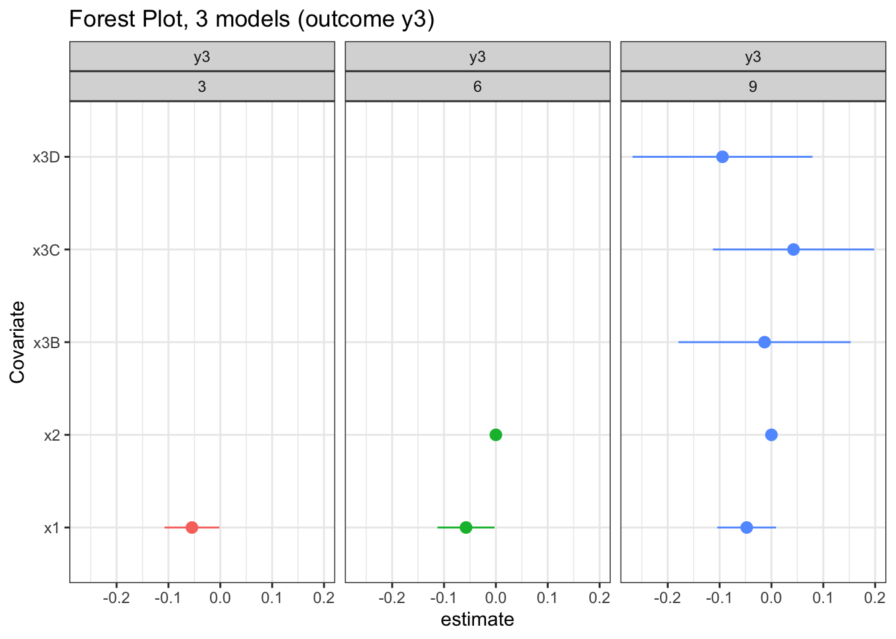

There are a lot of research applications for looping regressions. Very rarely does a research project consist of running a single regression and calling it a day. Sometimes this means looping through different outcome variables, other times you need to loop through sets of independent variables. This dummy script provides syntax for building these loops using the fixest package.
library(fixest)
library(tidyverse)Now that we have our packages loaded, we’ll build a dummy dataset for our regressions. y variables are outcomes; x variables are independent variables.
# build the dummy dataset
data.frame(x1=rnorm(100),
x2=sample(c(1:10000),100),
x3=rep(c("A","B","C","D"),25)) %>%
mutate(y1=(x1*3)+(x2*1.1),
y2=(x1*5)+(x2*0.5),
y3=runif(100)) -> datThis is useful when you are conducting multivariate regression, which occurs when you’re looking at the relationship of one variable with multiple outcomes. For example, the relationship of patient portal use with emergency department visits, primary care provider visits, and total costs.
## multiple outcome variables, same RHS (indep vars)
# first, create a vector with the characters of all of your outcome variables
oc_vars <- c("y1","y2","y3")
results <- list() # create an empty list to append via the loop
for (i in c(1:length(oc_vars))) {
results[[i]] <- feols(fml=formula(paste0(oc_vars[i],"~x1+x2+x3")),
se = "hetero",
data=dat)
}
# now we can just pass the results list to etable and get the models side by side
etable(results)## model 1 model 2 model 3
## Dependent Var.: y1 y2 y3
##
## (Intercept) 6.37e-12*** (1.63e-12) 9.09e-13 (6.87e-13) 0.5784*** (0.0856)
## x1 3.000*** (6.37e-13) 5.000*** (3.23e-13) 0.0197 (0.0287)
## x2 1.100*** (2.47e-16) 0.5000*** (1.12e-16) -2.4e-6 (1.09e-5)
## x3B 4.55e-12*** (1.33e-12) 4.55e-13 (3.45e-13) -0.1676* (0.0739)
## x3C 1.82e-12 (1.15e-12) -1.82e-12** (6.6e-13) -0.1065 (0.0768)
## x3D -5.46e-12** (1.87e-12) -3.64e-12*** (1.02e-12) -0.1385 (0.0856)
## _______________ ______________________ _______________________ __________________
## S.E. type Heteroskedastici.-rob. Heteroskedasticity-rob. Heteroskedas.-rob.
## Observations 100 100 100
## R2 1 1 0.05470
## Adj. R2 1 1 0.00442# we can also extract the estimates one by one
results[[1]] %>% summary()## OLS estimation, Dep. Var.: y1
## Observations: 100
## Standard-errors: Heteroskedasticity-robust
## Estimate Std. Error t value Pr(>|t|))
## (Intercept) 6.37e-12 1.63e-12 3.902800e+00 0.000179 ***
## x1 3.00e+00 6.37e-13 4.708603e+12 < 2.2e-16 ***
## x2 1.10e+00 2.47e-16 4.459057e+15 < 2.2e-16 ***
## x3B 4.55e-12 1.33e-12 3.425200e+00 0.000912 ***
## x3C 1.82e-12 1.15e-12 1.580700e+00 0.117299
## x3D -5.46e-12 1.87e-12 -2.913600e+00 0.004465 **
## ---
## Signif. codes: 0 '***' 0.001 '**' 0.01 '*' 0.05 '.' 0.1 ' ' 1
## RMSE: 5.427e-12 Adj. R2: 1results[[1]]$coeftable## Estimate Std. Error t value Pr(>|t|))
## (Intercept) 6.366463e-12 1.631235e-12 3.902849e+00 0.0001786682
## x1 3.000000e+00 6.371317e-13 4.708603e+12 0.0000000000
## x2 1.100000e+00 2.466890e-16 4.459057e+15 0.0000000000
## x3B 4.547474e-12 1.327651e-12 3.425202e+00 0.0009123303
## x3C 1.818989e-12 1.150728e-12 1.580729e+00 0.1172992636
## x3D -5.456968e-12 1.872945e-12 -2.913576e+00 0.0044647021
## attr(,"type")
## [1] "Heteroskedasticity-robust"coef(results[[1]])## (Intercept) x1 x2 x3B x3C x3D
## 6.366463e-12 3.000000e+00 1.100000e+00 4.547474e-12 1.818989e-12 -5.456968e-12This is useful when you are conducting multivariable regression, which occurs when you’re looking at the relationship of multiple variables with the same outcome. For example, the relationship of adopting different types of technology (EHR, HIE, patient portals) on hospital costs.
## one outcome, multiple right-hand sides
# I like to create a data frame with my formulas in it
oc_vars <- "y1" # reset to a single outcome variable
# expand.grid creates all possible combos of the vectors given
expand.grid(oc=oc_vars,rhs=c("x1","x1+x2","x1+x2+x3")) %>%
mutate(fml=paste0(oc,"~",rhs)) %>% pull(fml) -> fmls
# now we have a little vector of formulas stored as character elements
results <- list() # another empty list
# now instead of looping through oc_vars, we loop through fmls with the outcome constant
for (i in c(1:length(fmls))) {
results[[i]] <- feols(fml=formula(fmls[i]),
se="hetero",
data=dat)
}
etable(results)## model 1 model 2 model 3
## Dependent Var.: y1 y1 y1
##
## (Intercept) 6,229.8*** (300.0) 7.28e-12*** (1.16e-12) 6.37e-12*** (1.63e-12)
## x1 46.54 (317.6) 3.000*** (4.02e-13) 3.000*** (6.37e-13)
## x2 1.100*** (1.89e-16) 1.100*** (2.47e-16)
## x3B 4.55e-12*** (1.33e-12)
## x3C 1.82e-12 (1.15e-12)
## x3D -5.46e-12** (1.87e-12)
## _______________ __________________ ______________________ ______________________
## S.E. type Heteroskedas.-rob. Heteroskedastici.-rob. Heteroskedastici.-rob.
## Observations 100 100 100
## R2 0.00025 1 1
## Adj. R2 -0.00995 1 1## now vary both
## one outcome, multiple right-hand sides
# I like to create a data frame with my formulas in it
oc_vars <- c("y1","y2","y3") # reset to outcome variables
# expand.grid creates all possible combos of the vectors given
expand.grid(oc=oc_vars,rhs=c("x1","x1+x2","x1+x2+x3")) %>%
mutate(fml=paste0(oc,"~",rhs)) %>% pull(fml) -> fmls
# now this is 9 instead of 3, since it's 3 RHS by 3 outcomes, so 9 total formulas
results <- list() # another empty list
# loop through formulas exactly like we did in the last step
for (i in c(1:length(fmls))) {
results[[i]] <- feols(fml=formula(fmls[i]),
se="hetero",
data=dat)
}
etable(results)## model 1 model 2 model 3 model 4
## Dependent Var.: y1 y2 y3 y1
##
## (Intercept) 6,229.8*** (300.0) 2,831.7*** (136.4) 0.4618*** (0.0281) 7.28e-12*** (1.16e-12)
## x1 46.54 (317.6) 24.79 (144.4) 0.0158 (0.0283) 3.000*** (4.02e-13)
## x2 1.100*** (1.89e-16)
## x3B
## x3C
## x3D
## _______________ __________________ __________________ __________________ ______________________
## S.E. type Heteroskedas.-rob. Heteroskedas.-rob. Heteroskedas.-rob. Heteroskedastici.-rob.
## Observations 100 100 100 100
## R2 0.00025 0.00034 0.00329 1
## Adj. R2 -0.00995 -0.00986 -0.00688 1
## model 5 model 6 model 7 model 8
## Dependent Var.: y2 y3 y1 y2
##
## (Intercept) 1.82e-12*** (3.09e-13) 0.4627*** (0.0670) 6.37e-12*** (1.63e-12) 9.09e-13 (6.87e-13)
## x1 5.000*** (1.42e-13) 0.0158 (0.0285) 3.000*** (6.37e-13) 5.000*** (3.23e-13)
## x2 0.5000*** (6.41e-17) -1.53e-7 (1.1e-5) 1.100*** (2.47e-16) 0.5000*** (1.12e-16)
## x3B 4.55e-12*** (1.33e-12) 4.55e-13 (3.45e-13)
## x3C 1.82e-12 (1.15e-12) -1.82e-12** (6.6e-13)
## x3D -5.46e-12** (1.87e-12) -3.64e-12*** (1.02e-12)
## _______________ ______________________ __________________ ______________________ _______________________
## S.E. type Heteroskedastici.-rob. Heteroskedas.-rob. Heteroskedastici.-rob. Heteroskedasticity-rob.
## Observations 100 100 100 100
## R2 1 0.00329 1 1
## Adj. R2 1 -0.01726 1 1
## model 9
## Dependent Var.: y3
##
## (Intercept) 0.5784*** (0.0856)
## x1 0.0197 (0.0287)
## x2 -2.4e-6 (1.09e-5)
## x3B -0.1676* (0.0739)
## x3C -0.1065 (0.0768)
## x3D -0.1385 (0.0856)
## _______________ __________________
## S.E. type Heteroskedas.-rob.
## Observations 100
## R2 0.05470
## Adj. R2 0.00442# now all 9 regressions get done!I love visualizing regression results with forest plots, but that can be difficult using out-of-the-box regression plotting. Luckily, fixest gives us an easy option to pull out both estimates and 95% confidence intervals from multiple models, so we can graph things all at once.
The prms output from feols objects include all of the parameters for a forest plot.
# create empty list for plot data
plotdat <- list()
for (i in c(1:length(results))) {
plotdat[[i]] <- coefplot(results[[i]])$prms %>%
data.frame() %>%
mutate(oc=as.character(results[[i]]$fml)[2])
}bind_rows(plotdat) %>%
filter(estimate_names!="(Intercept)") %>%
ggplot() +
geom_pointrange(aes(x=estimate,y=estimate_names,
xmin=ci_low,xmax=ci_high),
position = position_dodge(width = 1)) +
facet_wrap(~oc) +
theme_bw()